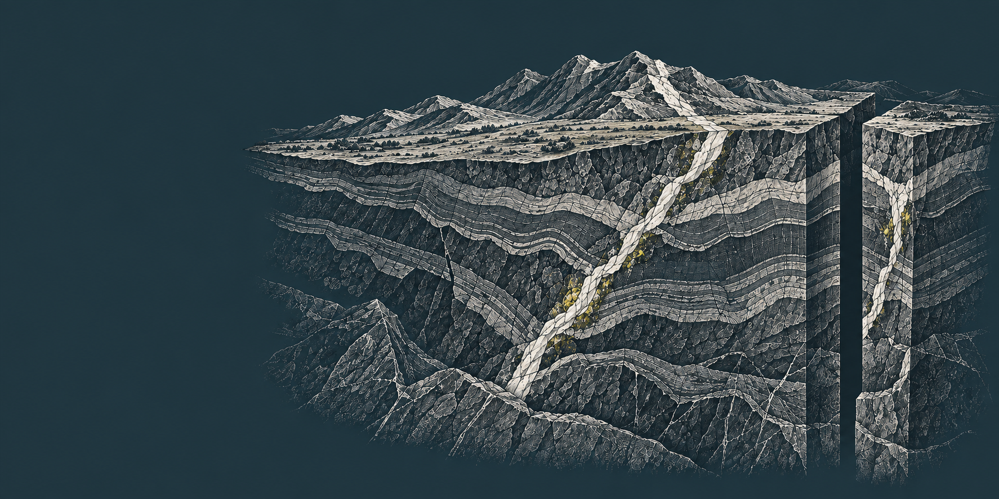
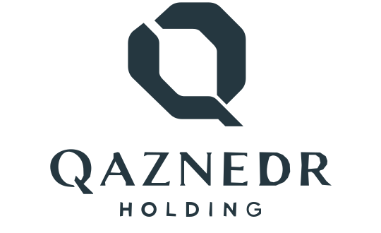
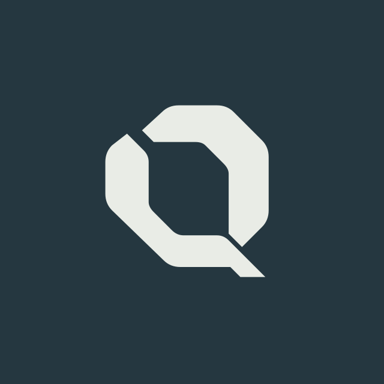
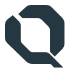
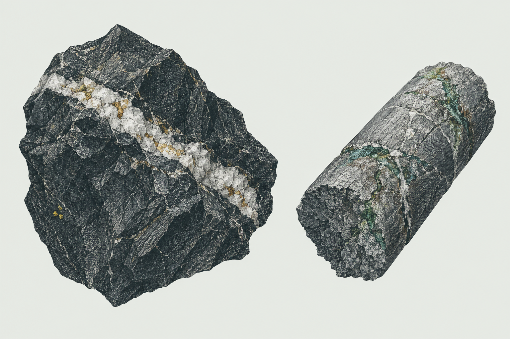
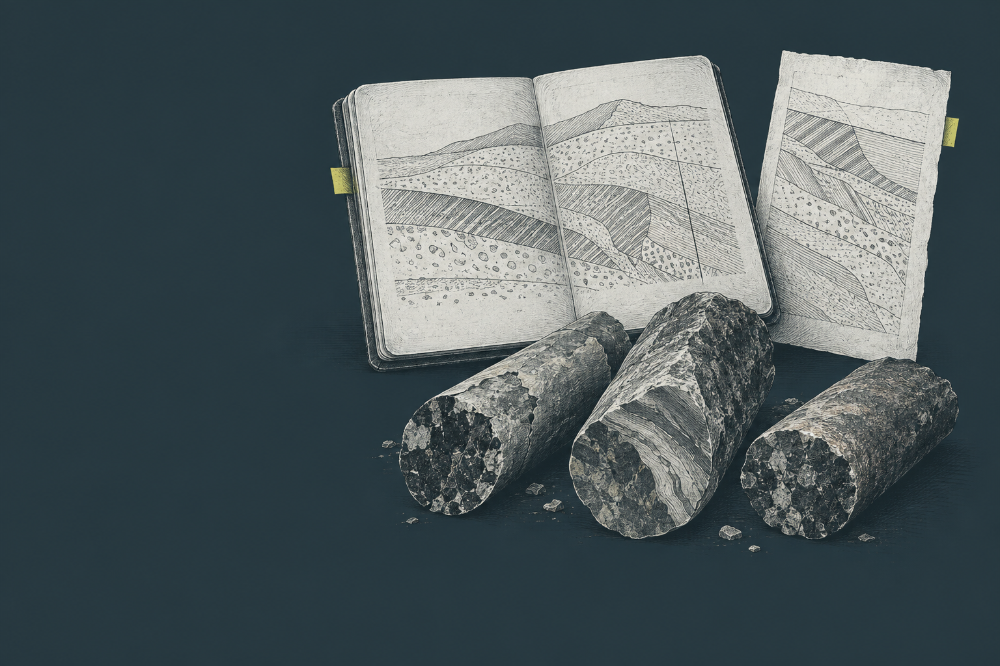
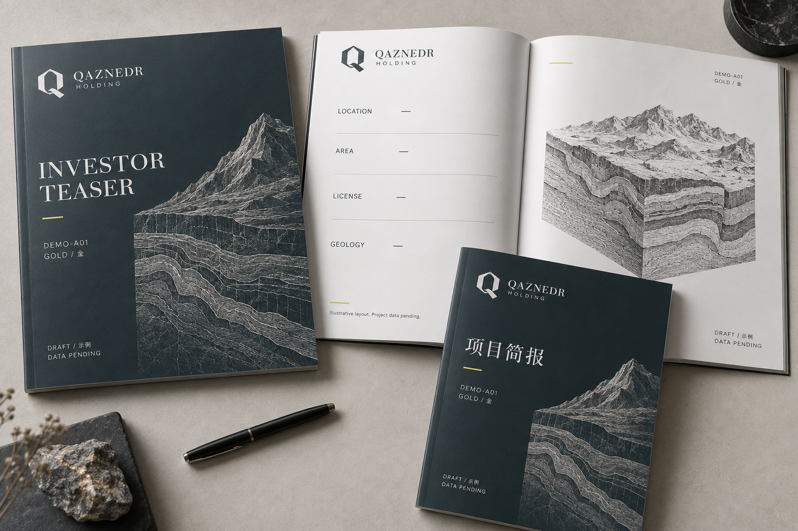

Порода и структура
Разрез, керн, штриховка и архивные материалы делают предмет работы осязаемым.
A3 «Контур» / D2 «Сланец и сера»

Геологическая экспертиза.
Предметный разговор об инвестициях.
Бренд, графика и цифровая система.
26 сентября 2026 · Предложение для утверждения.
Не декорация вокруг геологии, а понятный способ её показать.
Разрез, керн, штриховка и архивные материалы делают предмет работы осязаемым.
Данные сопровождаем источником, датой и ограничениями. Не выдаём интерпретацию за доказанный факт.
Понятный следующий шаг: обсудить задачу с командой через привычный канал.
Архивные рудные объекты в базе.
Эта цифра не означает число участков портфеля или владение ими.
Уже выбрано владельцем
A3, палитра D2, геологический характер, сцена перед портфелем, меню и одна кнопка связи на телефоне.
Предлагаем в этой редакции
Точные контуры логотипа, наборные шрифты, правила применения, носители и сценарий движения.


Характер
Мягкая фасетная Q, диагональный разлом и выразительные засечки названия. HOLDING остаётся вторым уровнем.
Статус
Единый воспроизводимый векторный кандидат. Детали рисунка сверяются с выбранным A3; это ещё не автоматически утверждённый мастер.
В малом формате работает знак. Полное название не сжимаем до нечитаемого текста.

Свободное поле сохраняет силуэт и разлом внутри круглого кадрирования.

Пропорции и минимальные размеры указаны в спецификации кандидата. Не добавлять подписи внутрь поля.
Контрастный одноцветный знак. Проверенный вектор. Размеры, в которых название читается. Спокойный однотонный фон.
Растяжение, контур вместо заливки, тени, объём, новые разломы, золочение или разные Q из генеративных листов.
Изображения ImageGen служат художественными ориентирами; знак в каждом таком изображении не становится новой официальной версией.
Основа #E9ECE6
Поверхность #F4F5F0
Текст #253740
Вторичный текст #51616A
Граница #64747A
Основа #253740
Поверхность #30434C
Текст #E9ECE6
Вторичный текст #CAD2CA
Граница #8FA19E
Текст сланец/мел: 10.36:1. Сланец/сера: 9.09:1. Серу не используем как мелкий текст на светлом фоне. Статусы обозначаем словами, не только цветом. Базовые цвета утверждены; дополнительные роли предложены.
Geology informs the next step.
IBM Plex Sans keeps project information clear, structured and readable.
Геология определяет следующий шаг.
IBM Plex Sans сохраняет ясность параметров, статусов и действий.
从地表到深部
地质研究与交易支持 · 与地质团队沟通
Заголовки: 32–36 px mobile / до 64 px desktop.
Основной текст: 16–18 px; подписи: от 14 px.
Китайские заголовки не разряжаем.
Наборная пара предложена для утверждения. Локальные файлы и лицензии сохранены. CJK: PingFang SC / Microsoft YaHei / Noto Sans CJK SC.
| Экран | Поля | Композиция |
|---|---|---|
| 375 px | 20 px | Одна колонка |
| 768 px | 32 px | 1–2 колонки |
| 1440 px | 120 px | Контент 1200 px |
Шаг 4 / 8 px. Крупные разделы разделены воздухом. Контуры помогают читать сведения; массивные тени не нужны.
У кнопки есть hover, active и контрастный focus. Disabled объясняет недоступность. Ошибка формы названа словами рядом с полем.
Цели от 44×44 px, кнопки от 48 px. Меню и одна плавающая кнопка связи. Последние поля остаются открытыми для нажатия.
Иконки: Lucide. Меню и фильтры: Escape и возврат фокуса. Формы: постоянные подписи. Проверка на реальном устройстве обязательна перед запуском.


Гравюрный характер, ясная структура и детали породы. Умеренная плотность: изображение не поглощает текст.
Сера выделяет одну зону или действие. Избегаем сияния, декоративных золотых жил и визуального шума.
Генеративная схема остаётся схемой. Фото команды и реальных материалов получаем от компании.
Иллюстрации созданы через ImageGen. Тексты располагаются отдельным слоем интерфейса, чтобы одна графика работала на всех языках.
Видим общий массив. Задаём контекст наблюдения.
Выделяем условную зону разреза и взаимное положение слоёв.
Объясняем, какие вопросы помогают сформировать материалы.
На desktop — сдержанная прокрутка. На mobile и при reduced motion — статичная последовательность с тем же смыслом. Это демонстрация подачи; отдельная точная 3D-модель и независимые слои не созданы. Сценарий: review/07-geology-motion.html.
Project code, reply details and your question are enough to start.
Contact via WhatsApp →WeChat и резервная форма доступны ниже.
请提供项目编号、联系方式和您的问题。
通过微信联系 →显示微信号、二维码和复制按钮。
У каждого языка свои переносы. Код проекта сохраняется при смене языка и переходе к контакту.
Для 中文 — системный CJK без разрядки. Название QAZNEDR HOLDING сохраняется до выбора китайского имени.
Китайские тексты требуют вычитки носителем. Языки ответа команды подтверждаются отдельно.
WeChat ID, QR и телефон предоставляет команда. До этого в макете остаются явные заглушки.

Художественное предложение носителей. В печатной сборке используются единый вектор, реальные поля и отдельный редактируемый текст. Сгенерированный лист не является готовым к печати оригинал-макетом.
Статусы и утверждения ведём отдельно.
Разрешение работать самостоятельно не утверждает каждый новый макет.
Навигация по пакету
review/00-design-review.html — страницы сайта
review/07-brand-system.html — продолжение
handoff/ — материалы разработчику
Источники типографики
github.com/adobe-fonts/source-serif
github.com/IBM/plex
Лицензии и ссылки: brand/fonts/README.md